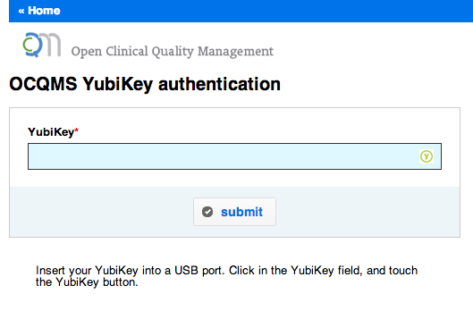

Blog
Shared Access to Medical Records

Permission Levels
- Granting access results in the sharing of all data - not just part of a patients record (e.g. a single visit).
- Access permissions are managed on the patient level.
- Access is granted to an institution and not to a single doctor within a hospital.
Granting access
- Institutions will see all patient data since the inclusion of the patient.
- Visits are not shared between hospitals: to add data a new visit must be opened.
- Any user may be given access permissions.
Revoking Access
- If an access permission is revoked the users in the removed institution will still have access to historic data, but can no longer edit patient information (e.g. opening a new visit).
- All users may revoke granted permissions (e.g. on patient's request).
More information about OCQMS: www.ocqm.org
Smart Medical Terms Control
For IT professionals medical documentation is a difficult matter. They are trained to approach problem domains using structured data and love forcing users to enter data in a well defined and structured form. Narrow questions with predefined answers are what IT companies will put on your form if you let them.
Doctors know that medical documentation is too complex to force it into a corset of predefined answers. Each case is special, each patient is different. Highly structured data offers a false promise of accuracy and precision.
An application for electronic health records must therefore allow doctors to document their work in their own words.
Doctors write text in an open and technically (!) not very structured way. This doesn’t mean that some parts of a medical file such as medication and lab results are not suited for a more rigid tabular data structure. But they remain the exception to the rule.

Smart Medical Terms Control (SMTC)
OCQMS doesn’t restrict doctors' freedom in documentation tasks. It allows doctors to write in an open-ended form. In addition to predefined questions (checklist) OCQMS offers an extended text box (open text field) on each form. Entering text into this field isn’t any different from using a text processor (e.g. MS Word) for writing medical reports.
The innovation of OCQMS lays in the Smart Medical Term Control (SMTC). SMTC is a new way to enrich free text with standardized medical terms. It is inspired by hashtags «#» known from Twitter and IRC. When typing «#» within an extended text field, the system will suggest standardized terms from a list of medical terms.
The list can include any medical concept. In our prototype we are using the SNOMED CT core problems list. It includes more than 6’000 medical terms. This list is a subset of terms most useful in documenting and encoding clinical information at a summary level, like a problem list, discharge diagnosis or reason of encounter.
SMTC for Reports
On the output side SMTC offers a way to visually «scan» medical reports (discharge summaries) for different dimensions. The SNOMED system of medical terms consists of 19 dimension or axes. In the reports section OCQMS provides a smart filter for the most relevant SNOMED axes:
- Clinical finding
- Procedure
- Situation with explicit context
- Event
We feel that giving doctors the ability to easily enrich unstructured text with metadata is an important approach when designing a medical application. Neither rigid structure nor everything-goes text input are silver bullets. There's a sweet spot to be found somewhere in the middle.
Open Clinical Quality Management System (OCQMS): www.ocqm.org
About SNOMED CT
«SNOMED CT or SNOMED Clinical Terms is a systematically organized computer processable collection of medical terms providing codes, terms, synonyms and definitions used in clinical documentation and reporting. SNOMED CT is considered to be the most comprehensive, multilingual clinical healthcare terminology in the world.»
http://en.wikipedia.org/wiki/SNOMED_CT
Clinical (Disease) Registry Checklist
The table below shows how OCQMS scores according to a disease registry checklist: http://www.scfbm.org/content/8/1/21
Learn more about OCQMS: www.ocqm.org
1. Technology Choices
|
---|---
Web-based or Desktop Application | Web-based, no Client Software Installation required
Relational Database or Unstructured Data | Relational Database (e.g. PostgreSQL)
Programming Language | Python
Cloud deployment vs Physical ICT Infrastructure | (Private) Cloud Deployment
Open Source vs Proprietary | Open Source Software Stack
2. Professional Software Development
|
Appropriate Software Project Management | Agile Development Methods
Well-structured, Commented Code | The Zen of Python (PEP 20), Style Guide for Python Code (PEP 8)
Version Control | Git
Issue Tracking | Trac
Documentation | Sphinx, Markdown
Software Deployment Instructions | Migration Scripts
Functional and Unit Testing | Test Coverage >99%, >2'250 Unit Tests
Deployment Process Documented | Configuration Management with Puppet
Strategies to Capture Community Feedback | Release Manager, Ticketing System
3. Interoperability
|
Export/Import Functionality | CSV, JSON, Excel Export
Webservice API | Export API (REST)
Data Standards | SQL, XML, PDF
Ontology (Data Elements, Disease elements) | ICD-10, SNOMED CT
XML Interfaces* | DICOM, HL7
4. System Design
| __
Customisable for a Specific Disease, Patient Registry, Clinical Registry | For Medical Practice and Clinical Research
Modular Design (New Features, New Data Elements, New Ontologies) | >30 Clinical Modules Available
Internationalization | i18n
Data Model | Entity-Attribute-Value (EAV) Approach Combined with a Object Relational Mapper (ORM)
5. Security
| __
De-Identification Process | Research Database incl. De-Identification Transformation
Two Factor Authentication | YubiKey
Multi-level User Access | Role-based Access Control (RBAC)
Work Groups | Group based Permissions on Hospital Level
Encryption | AES (Advanced Encryption Standard), 256-bit SSL Encryption
Audit Trail* | Full Audit Trail (TTW)
6. Sustainability
|
Ease of Exchange | Online Data Dictionary, Tabular Data Export
Effort Required | Seamless Integration into the Clinical Workflow, Report Generator
Future Proofing | Standard SQL Database for Data Storage
"Business Model"* | Software as a service (SaaS)
- added to the list
OCQMS is (not yet) open source: therefore the open source part has been omitted
2-Faktor-Authentifizierung in OCQMS
In den Datenbanken für die medizinische Forschung werden sensitive Patientendaten gespeichert. Der Zugriff auf die personenbezogenen Daten setzt eine sichere Authentifizierung der Benutzer voraus. OCQMS bietet ein sicheres Login mit 2-Faktor-Authentifizierung. Die Benutzer verwenden dazu YubiKeys.
Unterschiedliche Arten von Tokens
Die 2-Faktor-Authentifizierung ist flexibel implementiert, so dass grundsätzlich unterschiedliche Arten von Tokens verwendet werden können. Es lässt sich konfigurieren, ob ein YubiKey, ein Token per SMS (mTAN) oder eine andere Variante wie eine Strichliste mit Transaktionsnummern verwendet werden wird.

Auf dem Screenshot fällt auf, dass auf dem Formular nur ein YubiKey und kein Passwort eingegeben werden muss. Diese Methode ohne Passwort wäre nicht sicher, da damit ein gestohlener YubiKey zur Authentifizierung genügen würde. Im Authentifizierungsprozess von OCQMS ist dem abgebildeten Formular deshalb noch ein Login-Formular mit Passwort vorgeschaltet. So muss der Benutzer zwingend sowohl etwas wissen (sein geheimes Passwort) als auch etwas besitzen (sein persönliches YubiKey).
Sicherheit dank Hardware-Tokens
Das „Wissen“ kann gestohlen werden, ohne dass der Eigentümer es bemerkt (Passwort ausgespäht). Auch das „Haben“ könnte ohne das Wissen des Benutzers missbraucht werden. Beim Einsatz von Hardware-Tokens (wie dem YubiKey) ist dieses Risiko jedoch deutlich kleiner, da ein YubiKey nicht kopiert werden kann und der Verlust schnell bemerkt wird (Schlüsselbund weg).
Git for Reproducibility in Scientific Research
«Reproducibility is the hallmark of good science.» http://www.scfbm.org/content/8/1/7/
Git (Version Control System)
Git is a decentralized and distributed version control system (VCS). It's widely used in the software industry to maintain code repositories.
http://git-scm.com
LaTeX (Typesetting)
LaTeX is a high-quality typesetting system. LaTeX is the de facto standard for the publication of scientific documents.
http://www.latex-project.org
latex-git-log can be used to typeset the complete Git version history as table written in LaTeX. The typeset output (PDF document) includes the Git revisions (short SHA-1 hash).
http://www.ctan.org/tex-archive/support/latex-git-log
SQL Research Database (Snapshots)
All data of the registry is mirrored to a separate SQL database (research database). During the transfer process data transformations take place to bring the data into a tabular structure and to anonymize personal subject data. To ensure full reproducibility of SQL queries we create periodic snapshots of the research database. A snapshot is a complete immutable SQL database with a consistent naming convention (YYYY-MM-DD: e.g. 2013-12-29)
Sweave (R in LaTeX)
Sweave combines R codes and LaTeX documents for reproducing results. It makes it easy to embed R code into LaTeX.
Project Templates
For each new research project a template based Git repository is created. The template contains a common folder layout, scripts and LaTeX templates. The deployment of new repositories is managed with Puppet.
https://puppetlabs.com
Secure Shell Access (SSH)
Access control to the Git research repositories and to the SQL server with the research snapshot database is managed with SSH public/private keys.
GitWeb (Git Server)
Git repositories on a Git server have a URL and could be opened to the public by submitting links to the Git repository alongside manuscripts sharing them with reviewers. To lower technical barrier (installing and maintaining a Git server) web-based hosting service for Git repositories such as GitHub or Bitbucket could be used for the collaboration as well.
http://git-scm.com/book/ch4-6.html
About SCQM
The SCQM Foundation runs a scientific platform for prospective long-term studies on inflammatory rheumatic diseases
http://www.scqm.ch